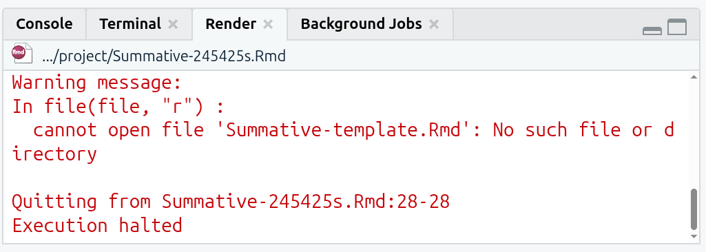

R Issues FAQ
This page contains information for solving common issues students have reported when working on their interpretive findings report.
Updates will continue being added to this page with information for any new issues being reported. So, if you experience an issue, this page will be a good first port of call to check for any existing solution.
Please Read
How to Report Issues
Reporting R Issues
When making a Moodle post or emailing about an issue it is vital to provide sufficient context to enable others to help find a solution. This includes:
- The full text of any error message that you are receiving.
- Any relevant code that is producing the error.
Error messages will often flag the relevant code chunk where the error occurred:
So, based on the above error message you would include the code within the code block at lines 49-50.
Additionally, when emailing, please also include:
- Your lab group number.
- If already made a Moodle post about the issue, a link to the post.
How to Avoid Most Common Issues
Important
An underlying cause to many issues reported each year is believing more code needs to be written for the assessments than is actually required.
The formative and summative assessment template projects we provide already have key things setup for you. Please ensure to follow all the instructions to setup the assessment projects correctly.
A copy of the NILT dataset is already included in the template projects. After following the instructions, your formative/summative assessment projects will also have:
- Every package you will need - except one - installed and loaded.
- An
nilt_subsetdata frame setup with only the variables used in the regression model. - (Summative only) a code chunk with the code to produce the regression results table you need to interpret.
This means:
- You do not need to add any additional code to download the NILT dataset.
- You do not need to add any additional code that assigns new data to the
niltandnilt_subsetdata frame objects (e.g. do not add any new lines withnilt <- ...ornilt_subset <- ...). - (Summative only) you do not need to add any additional code to create the regression model nor a regression results table.
You also should not remove any of the existing code chunks in the template as these are essential for initially setting everything up and when knitting your HTML file.
As the key things are already setup in the template for you, you only have to write a few lines of code overall.
For the formative, at its most basic, after following the setup instructions, all you need in terms of coding is -
- Install the
vtablepackage. - Load the
vtablepackage. - Use the
sumtable()function - which is provided by thevtablepackage - to create a descriptive statistics table for the variables included in the model.
That’s it. It’s no more complex than that. At its most basic, for the formative all you need to write is 3 lines of code. One in the Console, and two added to your R Markdown file. One can be added to the existing preamble code chunk, the other you’ll need to create a new code chunk for.
With the summative, alongside the above, the only additional thing you need to do in relation to coding is -
- Present data visualisations using
ggplot, where for each plot you will need to create a code chunk and write 3 - on rare occassions 4 - lines of code.
As long as you followed the setup instructions, the tidyverse package - which includes ggplot - will already be installed and loaded. This means you do not need to install nor load any other packages for your plots.
Overall then, at its most basic for the summative assessment all you need to write is the same 3 lines as the formative to create the descriptive statistics table and then an additional 3 lines of code per ggplot you want to create.
You may want to write some additional code when initially exploring the data or to calculate / present some additional stats. In rare cases, a plot may need one additional line of code to fix an issue, like overlapping text labels. However, it is perfectly possible to receive an A for the interpretive report with just the code outlined above.
So, if you find yourself downloading and wrangling data, running a multitude of functions beyond sumtable() and ggplot functions, or writing dozens and dozens of lines of code, you are doing more than is actually necessary. You will also likely run into issues if any of this code replaces what is already setup in the assessment template.
Don’t Believe GenAI Bullshit
GenAI Misinformation
Another common cause of issues each year is genAI leading people astray. GenAI is useful when you have a general understanding of the area / topic you are using it for. However, it is nowhere near as competent as the genAI companies and online grifters make it out to be. If you do not understand the area / topic you are prompting it about, you will not know when its responses contain inaccuracies or outright misinformation.
Indeed, all genAI responses are bullshit - and I use that as the correct philosophical term to describe it. GenAI does not distinguish between fact and fiction, it merely selects the next most probable token - which for simplicity can think of as a word - based on the tokens fed to it.
This is especially a problem when it comes to R. GenAI when prompted about R will respond with inaccurate information or needlessly complex and over convoluted code. Even where the code it spits out works, it can be 20+ lines of code for something that could more efficiently be achieved with 1-4 lines of code instead.
For example, here is Copilot’s bullshit response to a common error you might encounter:
The sumtable() function, as we covered in Lab 4, doesn’t come from the stargazer, modelsummary, nor summarizer packages. Instead, it comes from vtable. Yet, after telling Copilot that I still receive an error after installing the packages it advised:
So - First, Copilot advised me to install the wrong three packages. Second, when I informed it that didn’t work, it advised me to uninstall and reinstall the packages. Third, it then suggested if that still didn’t work - which it won’t - that it can give me information on ‘alternatives’. Two responses and it has wasted my time and rapidly led me further and further away from the simple quick solution for the error.
Indeed, if you review Lab 4, you will find that the solution to the problem was easy - install and load the package we used in the lab that provided the sumtable() function -
# Run in Console
install.packages("vtable")
# Load in preamble code chunk
library(vtable)As seen in this short example, if you put too much faith into genAI bullshit you risk needless frustration - and potentially losing hours of time - that a 5-minute review of the teaching materials would have helped solve.
As a reminder, whilst I have setup a custom GPT / saved prompt - RStudio Helper GPT - that aims to mitigate the worst aspects of standard genAI responses on R, it remains genAI with all the flaws that entails.
Critically, not only will uncritical use of genAI often lead you down the wrong path, prompting genAI to write code to copy and paste for your summative assignment will be treated as academic misconduct. You should only be using genAI to get textbook examples and explanations, and nothing that can be copied and pasted into your assignment. Please see the GenAI and the Assessments section for more information on what genAI use is permitted for the summative assessments.
Regression Results Table Issues
If variables go missing from your regression results table or the regression results are different to how they originally appeared when you knitted the template, you may have unintentionally replaced the data included with the template.
The preamble code block at the top of the R Markdown file provided with the template reads in the ‘fullnilt_2012.rds’ dataset and assigns it to the ‘nilt’ data frame object.
# Read data
nilt <- readRDS("data/fullnilt_2012.rds")You therefore do not need to download and read in another dataset, this is all setup for you already within the preamble code block. To resolve the issue, remove all additional code where you downloaded and assign another dataset to the nilt data frame. Then re-run the preamble code chunk.
For example, these would be lines to remove:
The ‘NILT2012GR’ that we used in the labs has a different set of the NILT variables, and does not contain all the variables in the ‘fullnilt_2012’ dataset provided in the project template. The above code then would result in variables disappearing from your regression results table.
Similarly, this would also be code to remove:
The above code replaces the original nilt data frame with a version that only includes the 5 variables listed within the selection function. Again, resulting in variables disappearing from the regression results table.
The select() function keeps variables passed to it and drops the others. The first argument is always the dataframe being selected from, select(dataframe, ...), with variables to keep from it listed after, select(dataframe, variable1, variable2, ...). Assigning, <-, select() to the same dataframe, dataframe <- select(dataframe, ..), is effectively saying, ‘from this dataframe keep these variables and permanently remove the others’. Unless your whole analysis is only going to use that selection, always assign it to a new dataframe instead, dataframe_subset <- select(dataframe, ...).
Important: the preamble code chunk in the R Markdown file provided in the project template already has a line of code for creating an nilt_subset object with only the variables that are used in the regression model.
# Subset with variables used in regression model
nilt_subset <- nilt |>
select(persinc2, rsex, religcat, orient, uninatid, tunionsa, rsuper, rage)Object Not Found
‘Object not found’ errors often arise when no data has been assigned to a data frame object. For example, if you ran code using nilt object, such as sumtable(nilt, ...) without first assigning data to it nilt <- ..., you would receive the following error message when running/knitting your code:

The preamble code chunk in the R Markdown file provided with the project template contains code for reading in the NILT data set and assigning it to an nilt data frame object. It also sets up an nilt_subset with just the variables used in the regression model.
If you are receiving object not found errors for these then, ensure you have run the preamble code chunk. If you still receive an error message, double-check for typos and capitalisation, nilt_subset, NILT_subset, and ni1t_subset will be treated as different objects.
Wrong Word Count
If the word count displayed at the top of your knitted HTML is wrong, check whether the line of code that calculates the word count refers to the correct R Markdown file you are using.
Within the template R Markdown document, we include an inline code block that uses a word count addin to calculate your word count within the knitted HTML file:

Which when knitted will look as follows in the HTML file:

However, the code to calculate the word count refers to a specific file “Summative-template.Rmd”. if you created a new RMarkdown file, such as one that included your student number ‘Summative-245425s.Rmd’, you also need to update the file name in the code:

Note, the ‘- 14’ in the code is so “Word count:” and each of the headers “Introduction”, “Data and method”, etc are also not included in the word count. Ensure to update this number to exclude your bibliography from the word count. For example, if your bibliography is 184 words then change the code to “wordcountaddin::word_count(”Summative-template.Rmd”) - 198”.
Code Chunks Appearing in Knitted File
The code in the code chunks should not be displayed within your knitted HTML file. The R Markdown file provided in the project template is already setup to not include the code from code chunks by setting the global knitr options to echo=FALSEin the setup code chunk.
If the code from code chunks are appearing in your knitted file, check you have not accidentally removed/modified the setup code chunk. If code from a specific code chunk is showing, but not others, then check you have not accidentally added echo=TRUE to its options.
Unable to Knit
Execution Halted
The most common cause of this error is from renaming the R Markdown file, but not updating the line of code that calculates the word count. See Wrong Word Count section for general info.
For example, if you renamed the R Markdwon file from ‘Summative-template.Rmd’ to ‘Summative-245425s.Rmd’, you will receive an ‘Execution halted’ error when trying to knit:

To fix it, just update the line of code that calculates the word count so it refers to the new name you have given the file:
Package could not be loaded
If receiving a “package ‘…’ could not be loaded” error message, check the YAML code block at the top of your RMarkdown file. Where this error message has occurred previously, it is due to using the vtable package and the YAML code block includes PDF as an output.
You should have either of the following for output: ...:

But, will probably have the something like the following if receiving the error message:
This can happen unintentionally as RStudio can automatically add a line for PDF outline, such as if accidentally clicked ‘Knit to PDF’:

Annoyingly, even if you click ‘Knit to HTML’ from the options, if your YAML block includes pdf_document in its outputs, R will still try to create a PDF document and keep running into the error message.
So, if you are receiving the error message and have the two output lines, you can easily fix it by removing the pdf_document line:

Note, as the YAML block is already specifying to create an HTML output, you can just click the ‘Knit’ button directly each time rather than clicking the wee down arrow to select ‘Knit to HTML’ specifically.
Turnitin Unable to Open HTML File
Please ensure to submit an exported version of your knitted HTML file rather than one saved through your browser.
If Turnitin is providing an error message that it is unable to open your submitted HTML file, it may be due to having saved the file through your browser (e.g. right-clicking and ‘Save as…’) rather than exporting it from RStudio. Whilst HTML files saved from the browser and exported from RStudio will look absolutely identical when opened, some browsers - and browser extensions - will add additional code within the HTML file. This additional code does not change how the file looks when opened, but the code in the file creates issues for Turnitin.
Please see the Exporting HTML Files for Submission page for step-by-step guide for how to export your knitted HTML file.
Please note: Don’t panic if Turnitin is unable to open your file. We are aware of the issue and you will not be penalised if you submit a file on time, but then have to resubmit after the deadline due to Turnitin being unable to open your original submission.